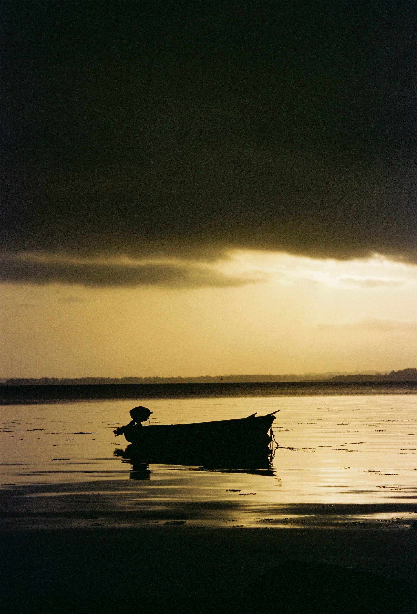

Københavnerbilleder
En guide til hipster foto
af Sten Simons


Københavnerbilleder er de danske streetfotografers bibel: Det er en fusion mellem et kunstværk og en lærebog. Bogen gennemgår alle væsentlige aspekter af streetfotografering fra grundlæggende teknik til kreative eksperimenter. Alt sammen krydret med masser af inspirerende fotos. God læselyst!
Titel: Københavnerbilleder - en
guide til hipster foto
Forfatter: Sten Simons
Antal sider: 344
Forlag: Mellem Linjerne
ISBN: 987-6-987654-32-1
Pris: 399.-
Anmeldelser af bogen
Københavnerbilleder er en grundig introduktion til at skyde
billeder med retro-kant. Hvad enten du er har arbejdet med foto
siden 135-filmen kom på markedet, du kun har skudt digitalt eller
er helt nybegynder, er der masser af tips og tricks i bogen.
- Hanne Hovgaard, Berlingeren
Teksten er underholdende, og billederne er sku' flotte. Hvad mere
skal man sige om en fotobog?
- Kim Kloggaard, Fotojournalen.dk
Sten Simons kan det der - og han bliver bedre og bedre. Stens
tredje fotobog er klart den bedste - her er han for alvor i sit
rette element, meget bedre end “studiefotografering som
begyndere.” Tillykke - godt arbejde.
- Volmer Hansen, Lukkertiden.dk
Bogens kapitler


Kapitel 1 - Intro til street foto
Hvad er street foto? Det handler i bund og grund om at skyde byens liv og byens geometri (urban geometry). I dette kapitel får du en grundig intro til hvad street foto er og et overblik over nogen af de kendte street-fotografer. Alt krydret med en masse gode eksempler på street fotos.
Kapitel 2 - Om at skyde street
Vil du skyde street? Så er der ikke nogen vej udenom: Du skal ud på gaderne og prøve det! I dette kapitel får du en teknisk indføring i hvordan du bedst skyder street. Uanset om du er begynder eller professionel, er der mange gode tekniske tips og tricks til street-skyderiet.
Kapitel 3 - Om at finde det rette motiv
Indimellem er man heldig, andre gange kommer man hjem helt uden gode motiver. Med et par tips og tricks til at finde de rette motiver, stiger chancen gevaldigt for at fange de gode motiver.
Kapitel 4 - Digital street foto
De fleste af os skyder oftest digitalt fordi det er billigere og nemmere. Og nogen teknikker og fremgangsmåder egner sig kun til digital street foto. I dette kapitel får du en række tips og tricks til digital street-foto.
Kapitel 5 - Analog street foto
Analog er sejt fordi det er mere “ægte,” dyrere og mere besværligt end digital. Det signalerer entusiasme. Nogle teknikker og fremgangsmåder egner sig bedst til analog street foto. I dette kapitel får du en række tips og tricks til analog street-foto.
Kapitel 6 - Om at skyde sort/hvid
Alle street-fotografer skyder sort/hvid nu og da. Nogen altid. Hvorfor? Hvad er der specielt ved sort/hvid fotografering, og hvad adskiller sort/hvid fra farvefotografering? Her får du en række tips og tricks til sort/hvid fotografering.
Kapitel 7 - Kreative teknikker
Dobbelteksponeringer, ICM (intentional camera moves), smadrede objektiver, gamle filmruller og alle mulige andre, spændende kreative teknikker kan løfte dine fotografier fra at være kedelige dokumentationer af hverdagen til at blive vilde kunststykker. Så dyk ned i dette kapitel om eksperimenterende teknikker!
Kapitel 8 - Kom helt tæt på!
Street foto handler om at fotografere livet på gaden - men tør du at gå helt tæt på fremmede mennesker og knipse løs? Du kan lige så godt øve dig, for det er det der vil gøre dig til en bedre street-fotograf…
Om Forfatteren
Sten Simons har en lang foto-karriere bag sig. Det hele startede i 00'erne, da han gik rundt i Pisserenden for at fotografere ungdommens forfald. Det ledte til en række udstillinger, og blev senere til hans først fotobog “Ungdomsdruk - pinlige billeder fra nattelivet.”
Derefter tog karrieren fart: Han blev fotojournalist og dokumenterede en masse dagligdagsstof fra Amager på dagbladet “Amagerkaneren.” Sideløbende begyndte han at undervise i foto, og har skrevet et utal af bøger, herunder bestsellerne Scener fra S-toget, Brun mad - en visuel odysse, og lærebogen Fotografering for evnesvage.

Billeder fra bogen